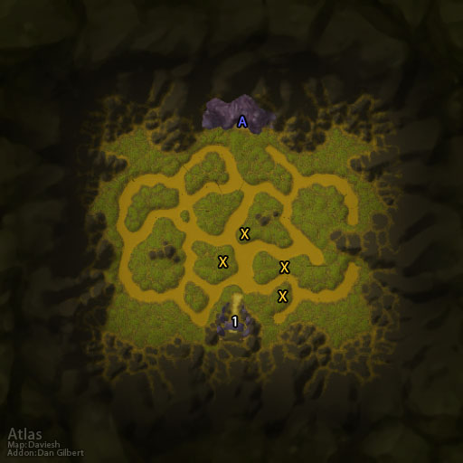

|  |
Location: Caverns of Time, Tanaris
Level Range: 68-70
Player Limit: 5
Event: Opening of the Dark Portal
Attunement Required
Rep: Keepers of Time
Key: Key of Time (Heroic)
A) Entrance
X) Portal (Spawn Point)
Wave 6: Chrono Lord Deja
Wave 12: Temporus
Wave 18: Aeonus
1) The Dark Portal
|